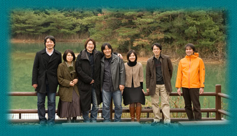

|
ユーザーの皆さまへ |
―― |
それでは、最後に読者の方へ一言ずつお願いします。 |
|
宮川 |
今までアドベンチャーゲームをやったことがないような方にも気軽に遊んでいただければと思います。DSでは一人でじっくり、Ｗｉｉでは家族一緒に楽しんでもらえればと思います。 |
|
鈴木 |
DS版をプレイしていなくても十分楽しめるようになっています。お気に入りのキャラクターを見つけて遊んでみてください。いろいろご意見を皆さんからお聞かせいただければと思っています。 |
|
小嶺 |
アシュレイと一緒にジュリエット・レイクに行ったつもりで、舞台の空気感を味わいながらたくさん探索して楽しんでもらえればと思います。 |
|
金崎 |
今回はキャラクターもたくさん登場していますので、人間関係という前作になかった広がりがあります。あとは謎解きも楽しんでもらえればと思います。サプライズもありますよ。 |
|
齋藤 |
ゲーム中の出来事にすべて答えを提示しているゲームではなく、遊び手の皆さまに想像していただく余地を残しています。これってどういうことなのかな、この人は今後どうなるんだろうみたいなことを自由に想像しながら遊んでもらえたら嬉しいです。 |
|
生田 |
私と同世代の普段ゲームをされないような方がプレイしたとしても、この世界観に浸って、楽しんでいただけると思います。ストーリーが真実に近づいたときに「アシュレイってこんなに愛されていたんだ」と感じていただき、その愛を受けとってほしいです。 |
|
吉良 |
アドベンチャーのゲームの楽しみって謎が解けたときとか、答えに気が付いたときにあると思います。悩むところがあっても、人に聞いたり、すぐにネットで検索したりせず、できるだけ自分で解いてみてください。 |
|
―― |
本日はありがとうございました。 |
|
 |